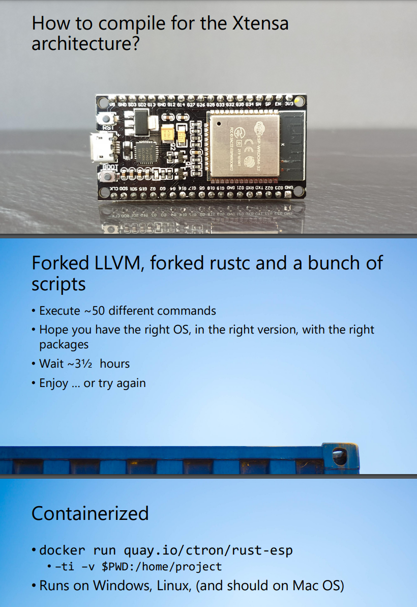

| ESP32 | Go back | Written by Knarkzel |
A feature-rich MCU with integrated Wi-Fi and Bluetooth connectivity for a wide-range of applications.
The ESP32 is essentially a more powerful version of the ESP32-C3 (except for Bluetooth). It features a dual-core CPU instead of single-core, with more RAM and ROM. One major downside for me at least is that it uses the Xtensa architecture instead of ARM or RISC-V. Since LLVM doesn't have Xtensa support yet, and Rust depends on LLVM, I can't use Rust for programming the ESP32 as easily as the ESP32-C3. There are however forks of LLVM with Xtensa support, and it seems like Xtensa support will come soon.

Nevertheless, this is also a great microcontroller that's very cheap. On AliExpress it costs 3.54 USD each. With shipping it's probably around 4-5 USD.
| CPU | Tensilica Xtensa LX6 32 bit Dual-Core @ 160 / 240Mhz |
| RAM | 520 KB |
| ROM (flash) | 448 KB |
| RTC Memory | 16 KB |
| External SRAM | 8 MB up to |
| External Flash | 16 MB up to |
| UART | 3 |
| SPI | 4 |
| Ethernet | 10/100Mbps |
| Wi-Fi | 802.11b/g/n |
| Bluetooth | 4.2 BR/EDR + BLE |
| ESP-MESH | ✅ |
| Temperature sensor | ✅ |
| GPIO | 34 |
| I2S | 1 |
| I²C | Up to 2 |
| PWM | Up to 8 |
| ADC | 12 bit SAR ADC up to 18 channels |